Overview of Naïve Bayes
Naïve Bayes is a probabilistic classification algorithm based on Bayes’ Theorem, which describes the probability of an event based on prior knowledge of conditions related to the event. The algorithm assumes that the input features are conditionally independent given the class label — an assumption that simplifies computation and makes the model highly efficient.
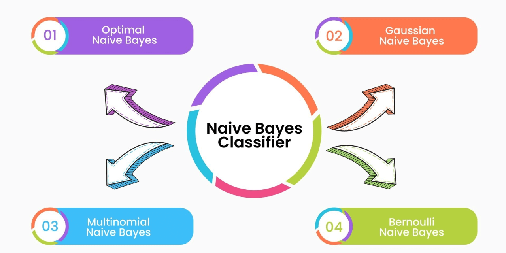
Types of Naïve Bayes Algorithms
- Gaussian Naïve Bayes: This variant assumes that the features follow a normal (Gaussian) distribution. It is ideal for continuous numerical features, which are common in medical or sensor-based datasets. For example, predicting diabetes based on blood sugar level or insulin concentration fits well with GaussianNB.
- Multinomial Naïve Bayes: This model is designed for discrete features such as counts or frequencies. It's commonly used in natural language processing tasks like document classification. MultinomialNB calculates probabilities using observed frequencies of features per class and works best when inputs are non-negative integers.
- Bernoulli Naïve Bayes: This variant is built for binary or boolean features (0 or 1). It is often used in tasks like spam detection, where features are either present or absent. BernoulliNB evaluates each feature as either occurring or not occurring in a sample and handles binary vectors well.
Why Smoothing is Needed (Laplace Smoothing)
In both MultinomialNB and BernoulliNB, there may be cases where a class does not contain a particular feature leading to zero probability and complete elimination of that class prediction. To solve this, we apply Laplace Smoothing (also known as additive smoothing), which adds a small constant (typically 1) to all feature counts. This prevents zero probabilities and ensures all classes remain viable during prediction.
In summary, Naïve Bayes offers a simple yet powerful baseline for classification. Its different variants can be chosen based on the type of data Gaussian for continuous values, Multinomial for count data, and Bernoulli for binary data.
GitHub Repository
View Naïve Bayes Code on GitHub ↗Dataset Used
The cleaned diabetes dataset was used for training and testing Naïve Bayes models.
 Download Cleaned Dataset
Download Cleaned Dataset
Data Preprocessing Steps
Step 1: Load and Explore the Data
Before applying the Naïve Bayes classification models, the cleaned dataset is loaded using pandas. We explore its structure, data types, and check for missing values or categorical columns.
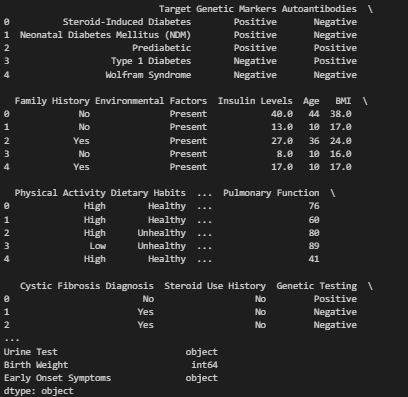
Step 2: Encode Categorical Features
All categorical features are encoded using LabelEncoder to convert them into numerical values, making them compatible with Naïve Bayes classifiers.
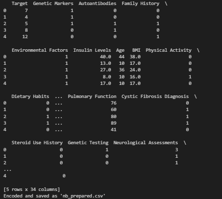
Step 3: Define Features (X) and Target (y)
We separate the independent features X from the target variable y which indicates diabetes classification. This setup is essential for model training.
Step 4: Train-Test Split
The dataset is split into training and testing sets to evaluate the model’s performance. We use an 80/20 split and fix the random state for reproducibility.
- Training Data: 80%
- Testing Data: 20%
- Random state ensures reproducibility.
Training Data Preview
Sample of the training data used to train the model:
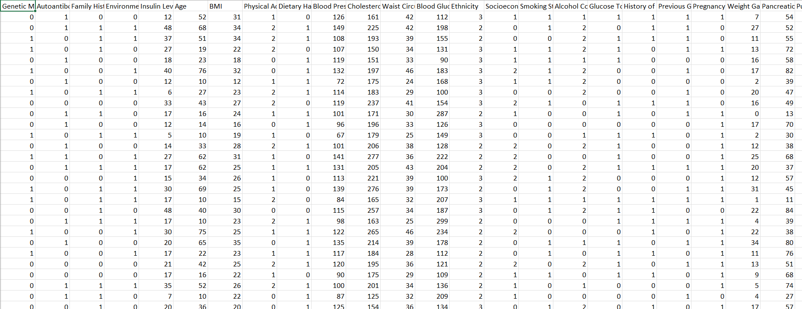
Download Training Sample CSVTesting Data Preview
Sample of the testing data used to evaluate model accuracy:
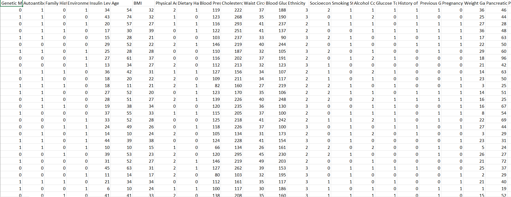
Download Testing Sample CSVDataset Summary
Total number of train & test samples in the dataset:
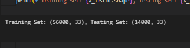
Step 5: Convert Data for Different Naïve Bayes Models
Different Naïve Bayes models have specific input requirements:
- GaussianNB: Works with continuous features. Data is normalized using
StandardScaler. - MultinomialNB: Requires integer (count-based) features. Data is converted to integer format.
- BernoulliNB: Requires binary data (0/1). We apply binarization to meet this requirement.
This step ensures the input is correctly formatted for each algorithm.
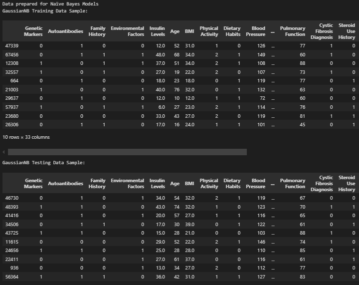
Naïve Bayes Results
Three models were trained and compared:
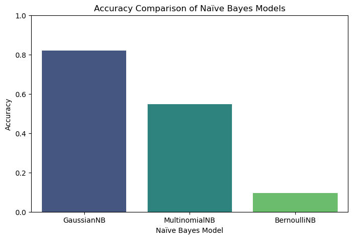
| Model | Accuracy | Macro F1-Score | Weighted F1-Score |
|---|---|---|---|
| GaussianNB | 82% | 0.82 | 0.82 |
| MultinomialNB | 55% | 0.55 | 0.55 |
| BernoulliNB | 9% | 0.09 | 0.09 |
Confusion Matrices
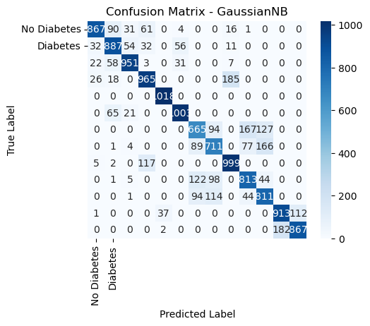
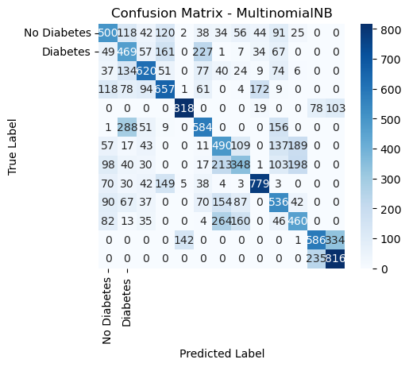
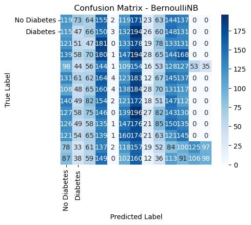
Results and Conclusion
Summary of Naïve Bayes Performance
We implemented and compared three variants of the Naïve Bayes classifier on a multi-class diabetes dataset to understand their strengths, weaknesses, and suitability for real-world medical data:
- GaussianNB – Assumes the features follow a normal (Gaussian) distribution. Ideal for continuous numerical inputs such as glucose levels, insulin, and BMI.
- MultinomialNB – Best suited for discrete or count-based features like word frequencies. Requires non-negative integer features.
- BernoulliNB – Designed for binary (0 or 1) input data. Often used in text classification with presence/absence of words or in yes/no surveys.
Comparative Results
| Model | Accuracy | F1 Macro | F1 Weighted |
|---|---|---|---|
| GaussianNB | 82% | 0.82 | 0.82 |
| MultinomialNB | 55% | 0.55 | 0.55 |
| BernoulliNB | 9% | 0.09 | 0.09 |
Visual Insights from Confusion Matrices
- GaussianNB demonstrated clear diagonal patterns in the confusion matrix, indicating correct classification across most classes. This shows its compatibility with normalized, continuous health features.
- MultinomialNB had more scattered misclassifications. The assumption of count-based inputs caused it to struggle on normalized values that weren’t actual frequency counts.
- BernoulliNB performed the worst. Most predictions were incorrect, and the model failed to capture class patterns due to the binarization step that oversimplified the dataset.
What We Learned
- Feature distribution and preprocessing are critical. GaussianNB succeeded because our diabetes dataset had numerical features that were standardized properly.
- Algorithm assumptions must match the data. MultinomialNB and BernoulliNB are effective only in specific contexts, like text classification or binary input tasks.
- Naïve Bayes models are lightweight but require careful input formatting. Without matching assumptions, their simplicity becomes a limitation.
Final Takeaways (Technical)
From a data science perspective, GaussianNB is highly efficient for large, continuous datasets where normal distribution is a fair assumption. Its simplicity and fast computation make it attractive for early-stage healthcare analytics. However, MultinomialNB and BernoulliNB should be avoided unless the data naturally fits their requirements such as integer-based counts or binary inputs. Overall, choosing the appropriate model based on the dataset’s nature led to significant performance differences, emphasizing the value of exploratory data analysis and understanding model constraints.
Final Takeaways (Non-Technical)
In simpler terms, Gaussian Naïve Bayes gave the most accurate results because it works well with numbers like those in health records like blood sugar or insulin levels. The other two models expected different kinds of data (like word counts or yes/no questions), so they didn’t perform well. This tells us that even basic machine learning tools can be very useful if the data is prepared in the right way. Just like choosing the right medical test for a symptom, choosing the right model for the data makes all the difference.
Broader Application
This comparison also shows how models like GaussianNB can be used in medical diagnostics where quick and interpretable predictions are needed. It’s not just about high accuracy, it’s about understanding the model’s assumptions and matching them with real-world data types for actionable outcomes in healthcare.